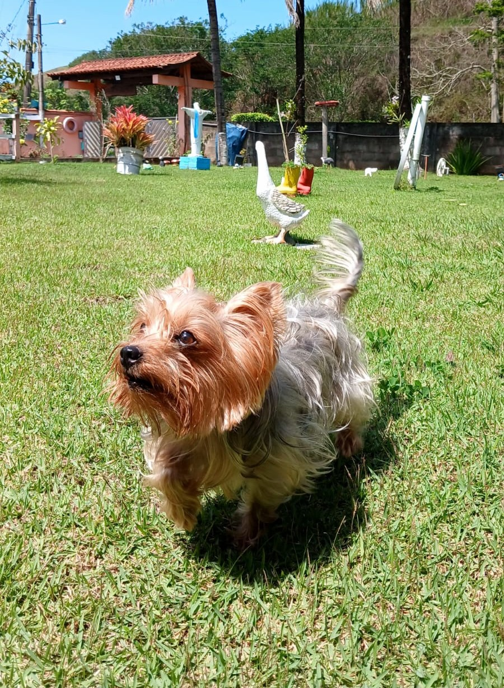

Cuidar vai muito além de um serviço.
A Nina nasceu para oferecer cuidado, segurança e carinho para os pets em todos os momentos.

Inspirada por quem entende de carinho.
A Nina serviu de inspiração para a criação deste projeto porque eu me apeguei a ela desde o primeiro dia em que a conheci. Para falar a verdade, eu nunca tinha tido um cachorro antes, e ela é da minha esposa. Mas, com o tempo, passei a caminhar com ela, dar banho, brincar e cuidar de cada detalhe.
Estou construindo e deixando este site pronto porque, num futuro próximo, quem sabe eu não possa vir a trabalhar com isso, unindo o meu propósito de vida com aquilo que me traz tanta alegria todos os dias."